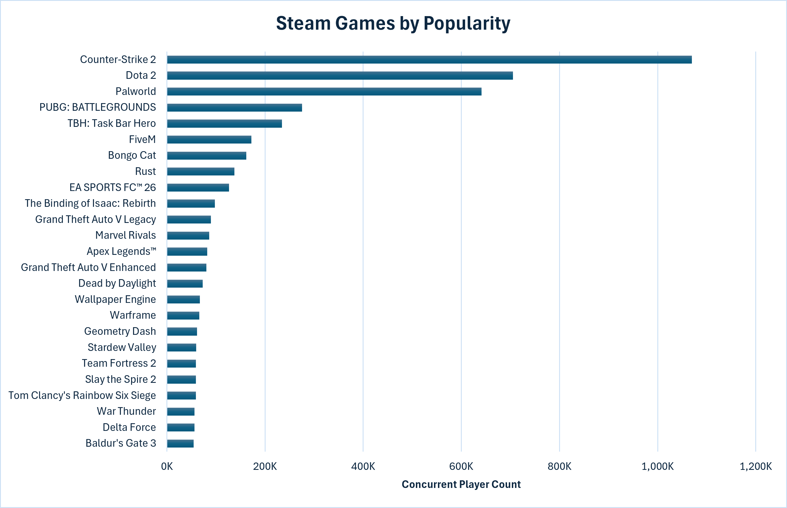
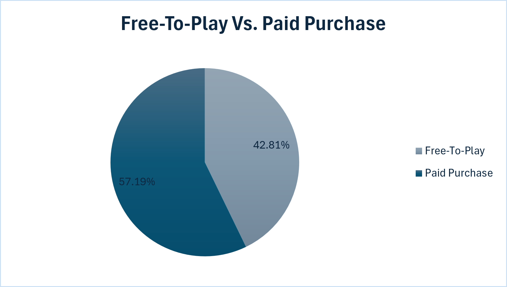
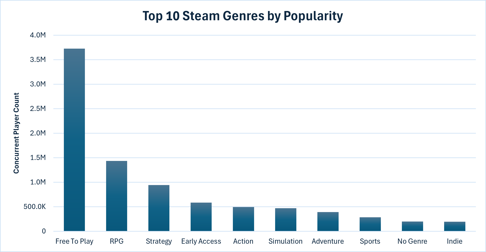
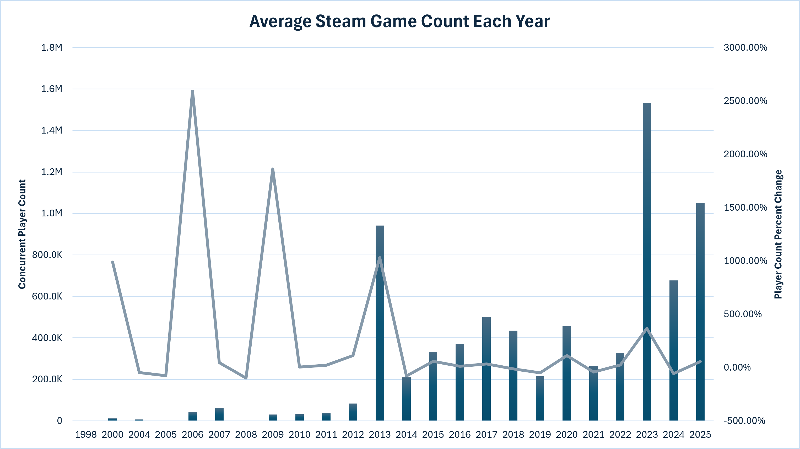
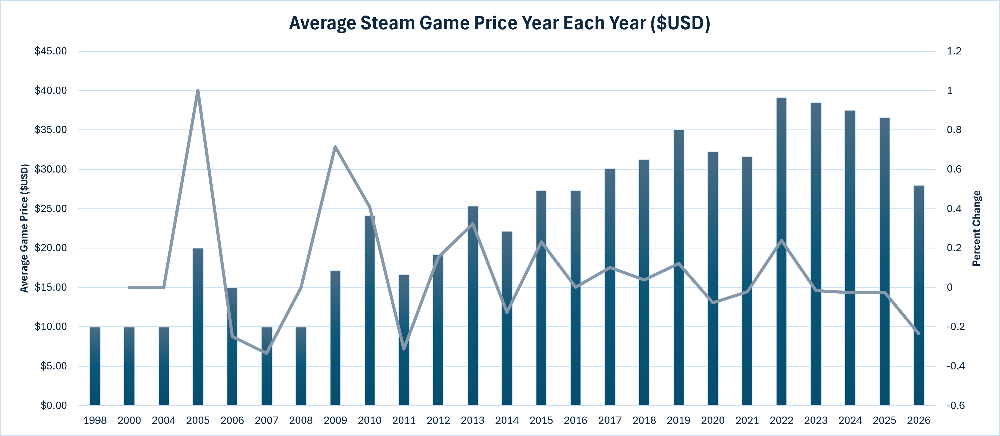
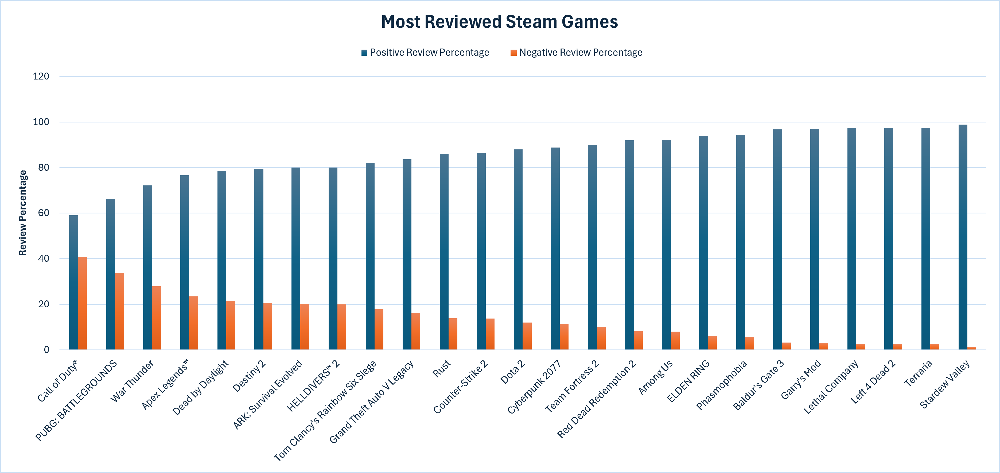
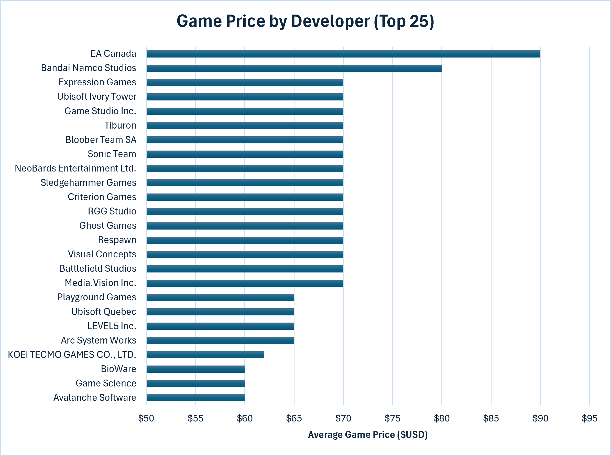

Question 01
Which games have the most players on Steam?
Analysis of a Steam dataset sourced from the Steam Web API, focused on popularity, pricing, genre performance, review quality, and developer strategy across the top 1000 games by concurrent player count in late July 2026.
Out of the current top 1000 titles, the analysis asks seven direct business questions:
Which games have the most players on Steam?
How do free-to-play and paid games compare in concurrent player counts?
Which genres attract the most players?
When were the most games released, and which recent titles are performing best?
How have game prices changed year to year?
Which games are most reviewed and best rated?
Which developers command the highest average game prices?
Each module includes SQL analysis, static image output, and an interactive chart view.
Ranked titles by concurrent player count and returned the top 25 most played games.

Compared top free-to-play and paid titles, then merged them into a combined ranking with average metrics.

Aggregated total concurrent players by genre to identify market-wide audience concentration.

Summed total concurrent player count by release year and calculated year-over-year percent change.

Tracked average prices of paid titles by release year and calculated year-over-year shifts.

Ranked games by review volume and re-ranked the same set by positive review score.

Ranked the top 25 developers by average game price.

Free-to-play remains the dominant model for reaching very high per-title concurrent player counts, though paid titles collectively hold the majority share of total concurrent players platform-wide due to their sheer volume. Premium pricing can still succeed when paired with strong value signals, community trust, and market positioning.
Action, Strategy, and RPG categories attract the largest audiences. Niche categories can work, but require intentional targeting and sharper differentiation.
As annual release volume rises, pre-launch wishlists, creator coverage, and launch-day momentum matter more than ever for visibility.
Review count indicates reach, while positive review score indicates player satisfaction. Titles strong in both are the clearest benchmark for long-term performance.
Premium average prices at the top of the developer list are often driven by a single flagship release rather than catalog-wide pricing power, while studios like KOEI TECMO GAMES CO., LTD. show sustained premium pricing across multiple titles is possible, but rare.
PostgreSQL
PostgreSQL, pgAdmin, DBeaver
Steam Web API with a custom Python scraper
Microsoft Excel and custom HTML/Chart.js pages